실시간 센서 모니터링
온도·압력·유속·전류·유량의 PV/SV, 설비 연결 상태, 전력·동작시간을 표시하고 실시간 트렌드를 제공합니다.
다양한 필드 센서를 PLC로 계측하고 자동·수동 제어 및 인터록을 구현한 팀 프로젝트입니다. 개인 담당 영역인 Node-RED 웹 모니터링에서는 실시간 데이터 수집, 원격 제어, 이력 및 알람 관리 기능을 독자적으로 구현했습니다.
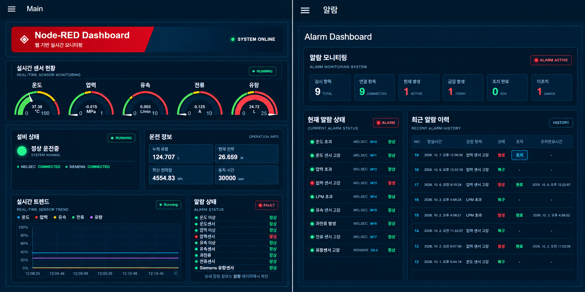
2026.09.08 ~ 2026.10.06 (130시간) · 3조 Retry 팀 프로젝트. 온도·압력·유속·유량·전류 센서 계측, PLC 제어, HMI/SCADA, 산업용 통신과 IoT 데이터 활용을 통합했습니다.
온도 · 압력 · 유속 · 유량 · 전류 (Node-RED에서 원격 AD값도 표시)
PLC 자동/수동 제어 · 밸브 조작 · 실시간 트렌드 · 이력조회 · 이상 알람
센서·전장 결선 작업에 주도적으로 참여하고, PLC 래더 프로그램 작성과 HMI 화면 구성·데이터 연동을 실습했습니다.
Node-RED 기반 웹 모니터링 시스템 구축, PLC 데이터 수집, 실시간 화면, 설비 제어, MySQL 이력 및 알람 모니터링을 구현했습니다.
MELSEC Q64AD 등으로 아날로그 센서를 계측하고 Siemens PLC에서 펄스 유량 데이터를 처리합니다. HMI와 X-SCADA로 현장 상태를 확인하며, Node-RED 및 MySQL로 웹 모니터링과 이력 관리를 구현했습니다.
전원부, MELSEC PLC 제어부, I/O 및 조작부, 밸브 스위치, HMI, 온도·압력 컨트롤러, 센서 및 액추에이터를 실제 실습 장비 사진에 구역별로 표시했습니다.
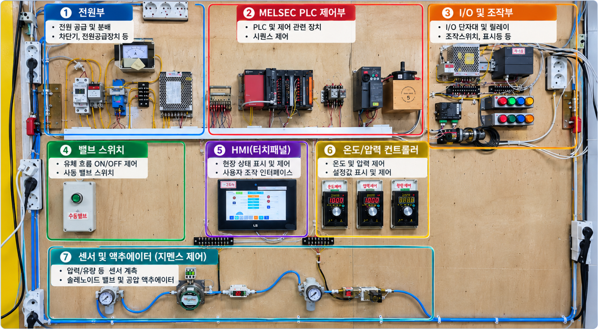
사진을 클릭하면 원본 크기로 확대해 볼 수 있습니다.
온도·압력·유속·전류·유량의 PV/SV, 설비 연결 상태, 전력·동작시간을 표시하고 실시간 트렌드를 제공합니다.
센서 데이터를 MySQL에 저장하고 조회 범위·표시 개수를 선택해 차트와 표로 확인합니다.
센서 초과·고장 및 통신 상태를 감시하고 알람 발생·복구 이력과 조치 상태를 확인합니다.
웹에서 MELSEC·Siemens 밸브 ON/OFF와 상태를 확인하고 센서 설정값, DB 저장 및 화면 갱신 주기를 관리합니다.
프로젝트 발표자료의 센서별 제어 구현(8~13페이지)을 기준으로 입력 신호, PLC 처리 과정, 주요 데이터 주소와 알람 비트를 정리했습니다. MELSEC 아날로그 입력은 Q64AD에서 계측하고, Siemens PLC는 펄스 유량을 계수해 환산합니다.
센서별 공통 AD 변환 FB 실행 전에 Q64AD 모듈의 입력 범위, A/D 변환 방식, PLC 데이터 전송 주소를 설정합니다.
| 채널 | 센서 | 입력 범위 |
|---|---|---|
| CH1 | 온도 | 4~20mA |
| CH2 | 압력 | 4~20mA |
| CH3 | 유속 | 1~5V |
| CH4 | 전류 | 4~20mA |
온도 드리프트 보정 사용 · Normal Resolution · Normal A/D Converter Processing
| 설정 | CH1~CH4 |
|---|---|
| A/D 변환 | Enable |
| 처리 방식 | Average Processing |
| 평균 방식 | Time Average |
| 평균 시간 | 100ms |
모든 채널에 동일한 100ms 시간 평균 처리를 적용합니다.
| CH1 · 온도 | CH2 · 압력 | CH3 · 유속 | CH4 · 전류 |
|---|---|---|---|
| D0 | D1 | D2 | D3 |
Q64AD 디지털 출력값 → PLC D0~D3 → 공통 AD_Conv FB → 센서별 PV 환산 및 알람 판정
MELSEC Q64AD의 아날로그 입력값을 실수형으로 변환하고 센서별 스케일을 적용하는 공통 FB입니다. HMI 표시용 정수 PV 변환, 설정값(SV) 초과 판정, 입력값이 K-50 미만일 때의 센서 이상 판정을 하나의 블록으로 구성했습니다.
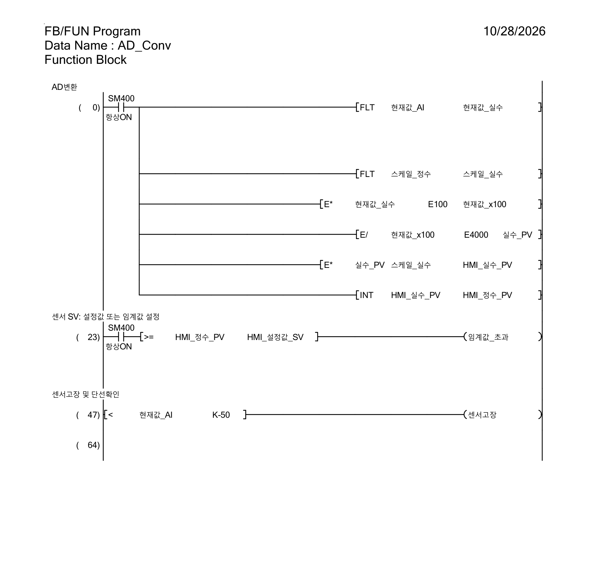
아래 내용은 프로젝트에서 확인된 기능을 처리 단계별로 풀어 쓴 해설입니다. 실제 레더의 개별 명령어 배치와 명령 순서는 위 원본 이미지를 기준으로 확인해야 합니다.
Q64AD의 채널별 디지털 변환값을 PLC D0~D3에 저장하고, 해당 채널의 값을 공통 FB에 전달합니다.
정수 형태의 A/D 입력을 실수 연산에 사용할 수 있는 형태로 변환합니다. 이 과정이 필요한 이유는 센서의 측정 범위를 비율로 환산하기 위해서입니다.
센서에 맞는 스케일 정수를 사용해 입력값을 공학 단위의 현재값(PV)으로 환산합니다. 같은 FB를 사용해도 채널별 스케일은 달라질 수 있습니다.
환산된 PV를 화면 표시 형식에 맞게 변환합니다. 실수 PV 주소와 표시용 정수 주소는 서로 다른 용도입니다.
PV와 설정값(SV)을 비교해 센서별 초과 알람 비트를 처리합니다. 예를 들어 온도 채널은 M10, 압력 채널은 M12입니다.
프로젝트의 FB 설명 기준으로 입력값이 K-50 미만인 조건을 센서 이상으로 판정합니다. 초과 알람과 별도 비트로 구분하며, 온도 M11, 압력 M13 등이 해당합니다.
설계 의도: 공통 FB의 연산 로직을 재사용하면서 센서별 입력·스케일·SV·알람 디바이스만 구분하면, 동일한 처리 방식으로 4개 아날로그 채널을 관리할 수 있습니다.
같은 AD_Conv FB를 온도·압력·유속·전류의 각 채널에서 호출하고, 채널별 입력 주소·스케일·설정값·알람 비트를 구분했습니다. 각 이미지를 클릭하면 원본 레더를 확인할 수 있습니다. 아래의 주소·판정 흐름은 실제 프로젝트에 기재된 PLC 디바이스를 기준으로 정리했습니다.
D0~D3② 공통 AD_Conv FB 호출③ 센서별 PV 환산 D80~D86④ SV 비교 및 알람 비트 M10~M17⑤ HMI · Node-RED 상태 표시PV는 현재 계측값, SV는 비교 기준 설정값입니다. 센서 초과 알람과 센서 이상 알람은 서로 다른 비트로 관리합니다. 아래 이미지는 실제 레더 캡처이며 설명은 이해를 돕기 위한 요약입니다.
SG-002 · 4~20 mA
아날로그 입력 D0 → AD_Conv_1 FB 스케일 변환 → 온도 PV(D80) → HMI 표시·트렌드 및 설정값 비교
레더 해석: Q64AD CH1의 D0 입력을 AD_Conv_1에 전달합니다. 환산한 온도 현재값(PV)은 D80, 비교 기준인 설정값(SV)은 D21이며, 초과 시 M10, 센서 이상 시 M11을 사용합니다.
| 항목 | 디바이스 |
|---|---|
| AD 입력 | D0 |
| 설정값 SV | D21 |
| 스케일 정수 | D30 |
| 표시용 변환값 | D20 |
| 현재값 PV | D80 |
| 온도 초과 | M10 |
| 센서 고장 | M11 |
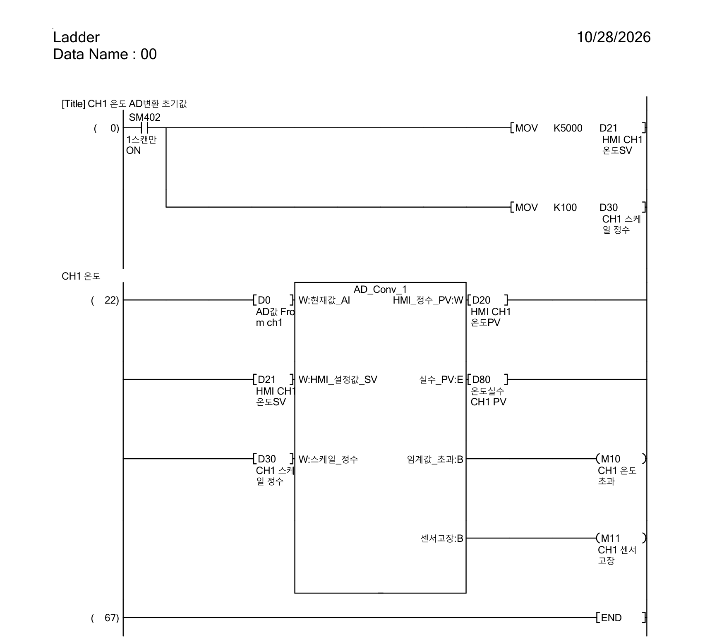
SMC ISE-80-02L-S-M · 4~20 mA
아날로그 입력 D1 → 압력 스케일 변환 → 압력 PV(D82) → HMI 표시·설정값 비교 및 이상 감시
레더 해석: CH2의 D1 입력을 공통 변환 FB로 처리합니다. 압력 PV D82와 SV D23을 비교하며, 압력 초과는 M12, 센서 이상은 M13으로 구분합니다.
| 항목 | 디바이스 |
|---|---|
| AD 입력 | D1 |
| 설정값 SV | D23 |
| 스케일 정수 | D31 |
| 표시용 변환값 | D22 |
| 현재값 PV | D82 |
| 압력 초과 | M12 |
| 센서 고장 | M13 |
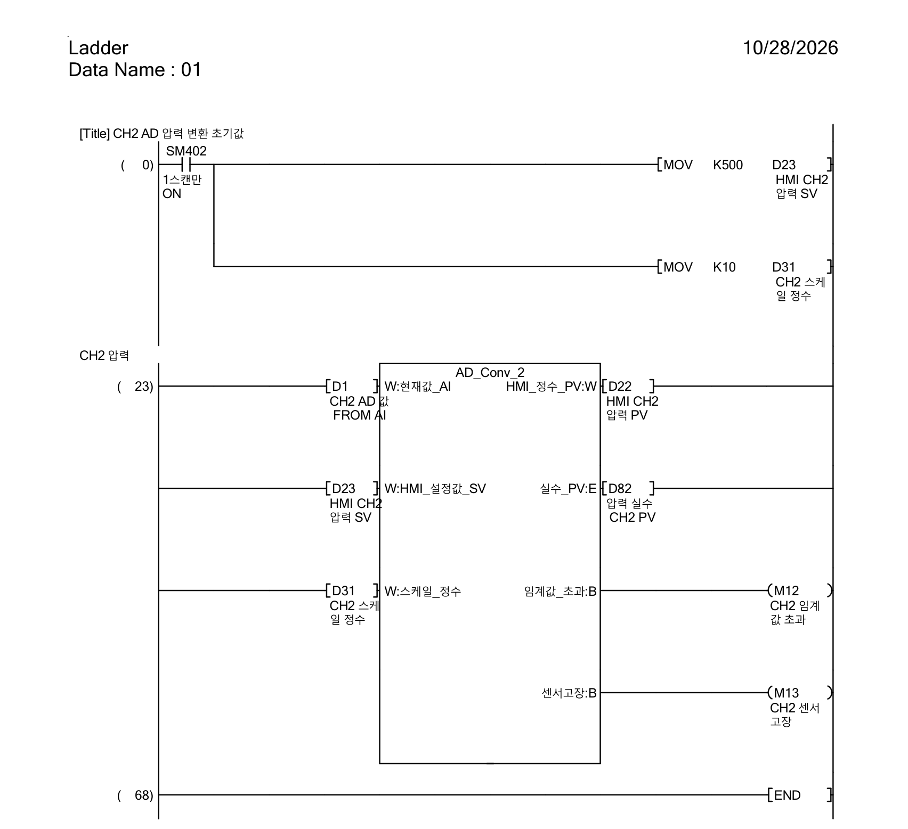
Panasonic FM215-8-P · 1~5 V
아날로그 입력 D2 → 유속 스케일 변환 → 유속 PV(D84) → HMI 현재값·개폐시간·누적 유량 표시 및 이상 감시
레더 해석: CH3의 D2 입력을 유속 PV D84로 환산합니다. SV D25와 비교해 초과 시 M14, 센서 이상 시 M15을 사용합니다. 유속 측정과 누적유량 계산은 연관되지만 별도 연산 단계입니다.
| 항목 | 디바이스 |
|---|---|
| AD 입력 | D2 |
| 설정값 SV | D25 |
| 스케일 정수 | D32 |
| 표시용 변환값 | D24 |
| 현재값 PV | D84 |
| 유속 초과 | M14 |
| 센서 고장 | M15 |
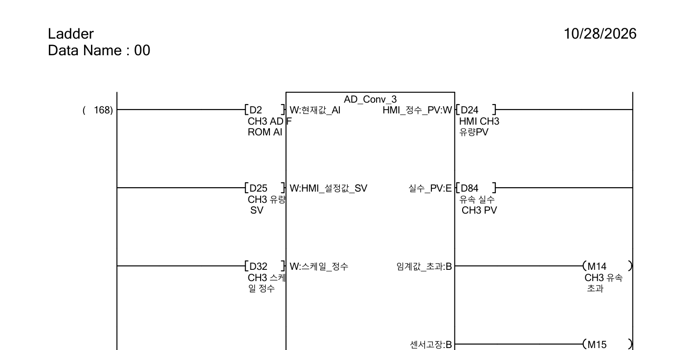
CJ-ACI · 4~20 mA
아날로그 입력 D3 → AD_Conv_4 FB → 전류 PV(D86) 스케일 변환 → 동작시간·전력·적산전력량 연산 → HMI 표시·과전류 및 센서 이상 감시
레더 해석: CH4의 D3 입력을 AD_Conv_4로 처리하고 전류 PV D86을 생성합니다. SV D27과 비교한 과전류 M16, 센서 이상 M17을 구분하며, 전력·적산전력량은 후속 연산에서 처리합니다.
| 항목 | 디바이스 |
|---|---|
| AD 입력 | D3 |
| 설정값 SV | D27 |
| 스케일 정수 | D33 |
| 표시용 변환값 | D26 |
| 현재값 PV (실수) | D86 |
| 동작시간 | D54 / T2 |
| 전력 | D60 |
| 적산전력량 | D68 |
| 과전류 | M16 |
| 센서 고장 | M17 |
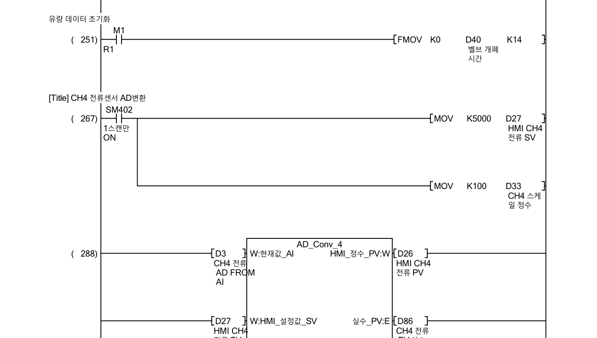
MELSEC CH3의 아날로그 유속 계측과 구분되는 Siemens 펄스형 유량 센서 제어입니다. Network 1~4를 제어 순서대로 배치했습니다. 각 Network의 역할과 데이터 흐름을 설명하며, 실제 명령어·주소·상수는 원본 레더 이미지를 기준으로 확인해야 합니다.
Network 번호는 프로그램의 구성 순서입니다. 위 요약은 기능별 관계를 나타내며, 모든 Network가 단일 직렬 신호선으로 연결된다는 뜻은 아닙니다.
밸브 출력 및 유량 표시 램프 제어 회로
밸브 조작 조건을 확인하고 실제 밸브·표시 램프의 출력 회로를 따라갑니다. 명령 비트와 물리 출력 피드백은 구분해서 확인해야 합니다.
현장 의미: 조작 명령이 전달되었다는 사실만으로 밸브가 실제로 동작했다고 판단하지 않도록 출력 상태를 함께 감시합니다.
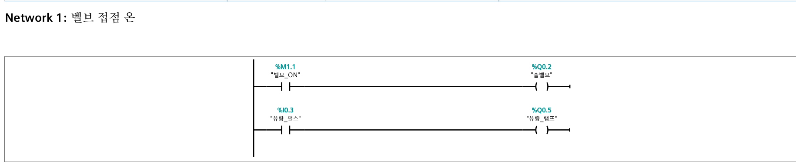
유량 센서 펄스 카운트 수집과 초기화
유량 센서의 펄스 입력 → 카운터 계측값 → 초기화 조건 순서로 확인합니다. 이 단계의 카운트값은 아직 최종 유량 표시값이 아닙니다.
현장 의미: 펄스형 센서의 입력 변화가 PLC 내부 계측값으로 집계되는 과정입니다. 초기화 명령과 계측 데이터의 관계도 함께 확인합니다.
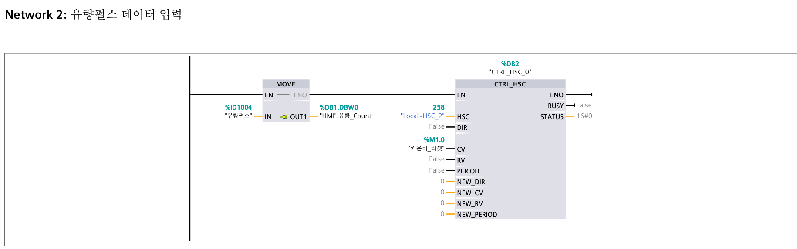
카운트값의 실수 변환과 TURN 유량 기반 환산
Network 2에서 얻은 카운트값을 연산 가능한 자료형으로 변환하고, 프로젝트의 TURN 유량 기준을 적용하는 계산 부분을 확인합니다.
현장 의미: 펄스 개수 자체가 아닌 유량 단위의 수치를 만들기 위한 연산 단계입니다. 정확한 환산식과 상수는 원본 레더의 명령어·피연산자를 기준으로 확인해야 합니다.
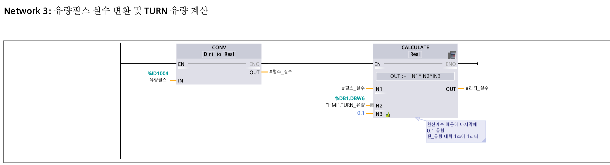
계산 결과의 정수·실수 데이터 변환
Network 3의 계산 결과가 HMI에서 사용할 자료형과 표시값으로 변환되는 과정을 확인합니다. 계측값·연산값·표시값은 역할이 다를 수 있습니다.
현장 의미: PLC 내부의 수치와 HMI 화면의 자릿수·단위가 일치하도록 데이터 표현을 맞추는 단계입니다.
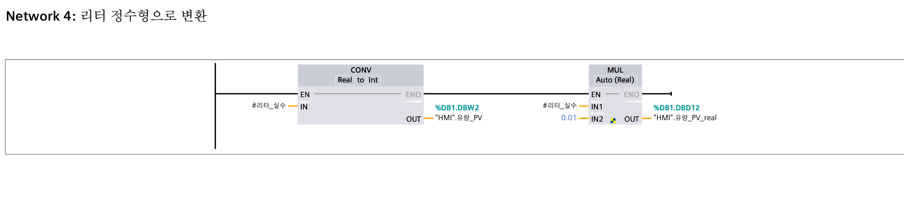
CH3 유속 계측값과 전자밸브 개폐시간을 이용해 환산유량을 계산하고, 누적유량을 적산하는 별도 레더입니다.
D24 유속 PV, D40 밸브 개폐시간, D44 환산유량, D48 누적유량을 사용하는 연산 회로
CH3의 계측값을 스케일 변환한 유속 데이터를 연산에 사용합니다. 이 회로 설명에 기재된 D24는 표시용 변환값이며, 센서별 FB 설명의 실수 PV D84와 구분해야 합니다.
D40에 저장된 밸브 개폐시간을 계산에 반영합니다. 밸브 동작시간이 유량 환산에 어떤 방식으로 적용되는지는 원본 레더의 연산 명령어를 기준으로 판단합니다.
유속 계측값과 시간 정보를 사용한 계산 결과를 D44 환산유량으로 관리합니다. 환산식의 계수와 단위는 원본 연산식을 확인해야 합니다.
계산된 유량을 누적하는 결과 데이터가 D48입니다. 환산유량은 해당 계산의 결과이고, 누적유량은 시간에 따라 합산된 값이라는 차이가 있습니다.
초기화 회로에서는 리셋 조건이 성립했을 때 어느 디바이스를 0으로 만드는지 확인해야 합니다. D44와 D48이 모두 초기화되는지는 원본 레더의 실제 초기화 대상 주소를 기준으로 판단합니다.
확인 기준: 이 설명은 포트폴리오에 기재된 데이터 주소와 기능 흐름을 해설한 것입니다. 개별 명령어, 적산 주기, 초기화 접점과 연산 계수는 레더 이미지를 확대해 대조하기 전까지 단정하지 않습니다.
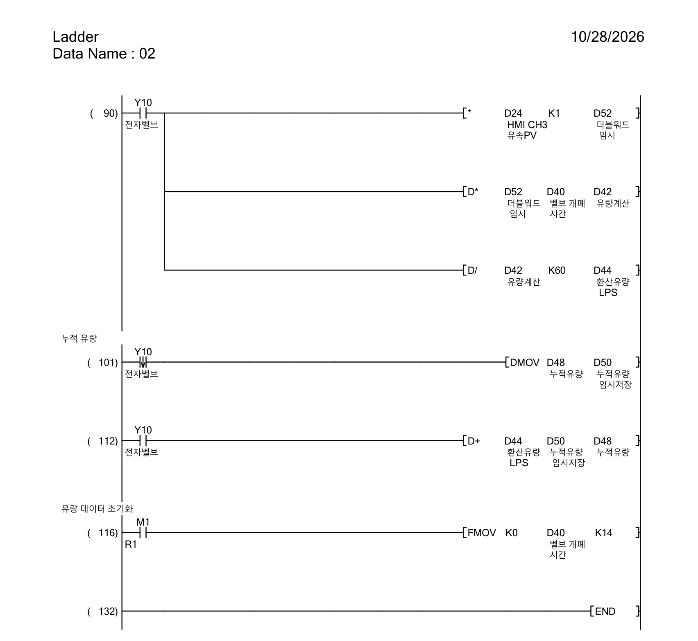
CH4 전류 계측값을 이용해 전력과 전력량을 계산합니다. 전압 224.5 V와 역률 0.95는 레더에 기재된 적용값입니다.
CH4 전류 센서의 측정값을 PLC에서 환산하고, 전력 연산에 필요한 자료형으로 처리합니다.
레더에 기재된 적용 전압 224.5 V와 역률 0.95를 사용해 전력을 계산합니다. 단상 유효전력의 기본 관계는 P = V × I × PF입니다. 실제 연산의 단위와 저장 주소는 원본 레더를 기준으로 확인합니다.
전력(W)은 특정 순간의 소비 속도이고, 전력량(Wh)은 시간에 따른 누적 소비량입니다. 1초 간격의 전력값을 Wh로 적산할 때는 일반적으로 W ÷ 3600을 사용합니다.
프로젝트 설명의 SM412 1초 클럭을 이용한 누적 연산을 확인합니다. 클럭 접점의 동작 방식과 실제 가산 조건은 원본 레더에서 대조해야 합니다.
검토 포인트: 224.5 V와 0.95는 이 프로젝트에서 적용한 값이지 모든 설비에 공통인 상수가 아닙니다. 위 W ÷ 3600은 1초 샘플을 Wh로 환산하는 일반 원리이며, 원본 레더가 정확히 같은 연산을 사용하는지는 별도 확인이 필요합니다.
현장 PLC와 연동한 센서 계측값(PV), 실시간 트렌드, 설비 조작 및 MySQL 데이터 관리를 하나의 X-SCADA 화면에 구성했습니다.
온도(℃), 압력(MPa), 유속(LPM), 유량(L), 전류(A), 원격 계측 AD값을 표시하고 각 센서의 변화 추이를 트렌드 차트로 확인합니다.
대시보드 우측 상단 원형 버튼은 MELSEC PLC 솔레노이드 밸브, 하단 원형 버튼은 Siemens PLC 솔레노이드 밸브 조작용으로 구분했습니다. 옆의 초기화 버튼은 별도 초기화 기능입니다.
조회·삽입·삭제 버튼과 데이터 테이블을 구성해 센서값, 저장 번호 및 측정 시각을 확인합니다.
화면 상단에 MELSEC 및 Siemens의 접속 정보를 표시하여 통합 계측 시스템의 연결 대상을 확인할 수 있습니다.

MELSEC·Siemens PLC 통신부터 실시간 센서 계측, 트렌드, 밸브 제어, MySQL 이력조회, 알람 및 시스템 설정까지 직접 구축한 Node-RED Dashboard 2.0 화면입니다. 아래 9개 화면을 클릭하면 원본을 크게 볼 수 있습니다.
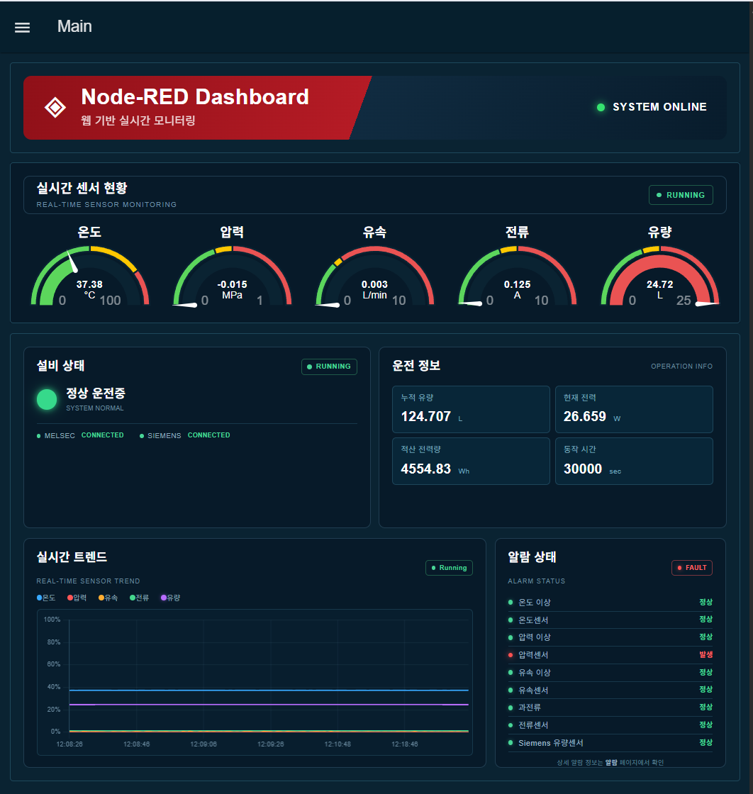
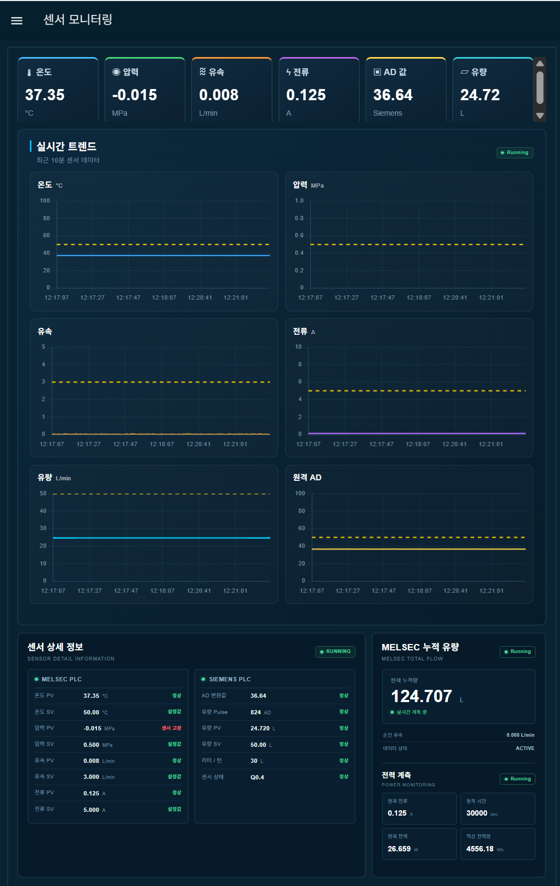
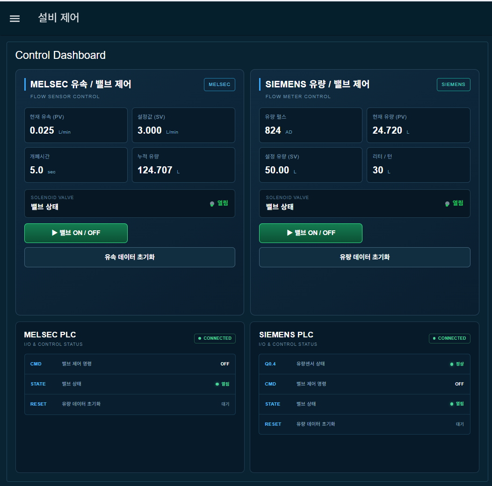
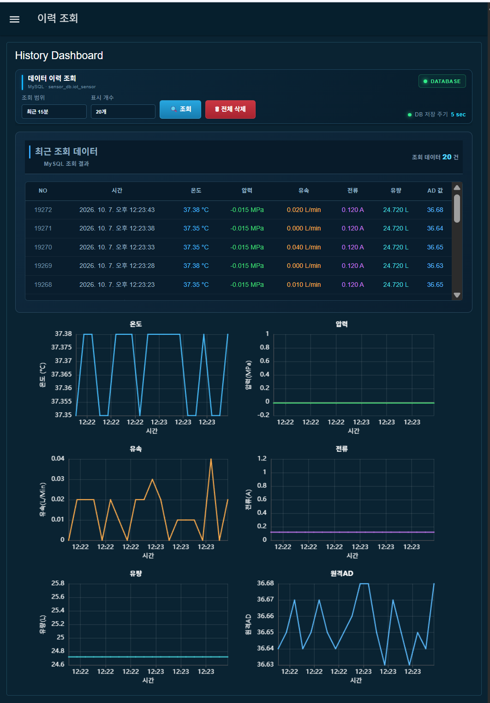
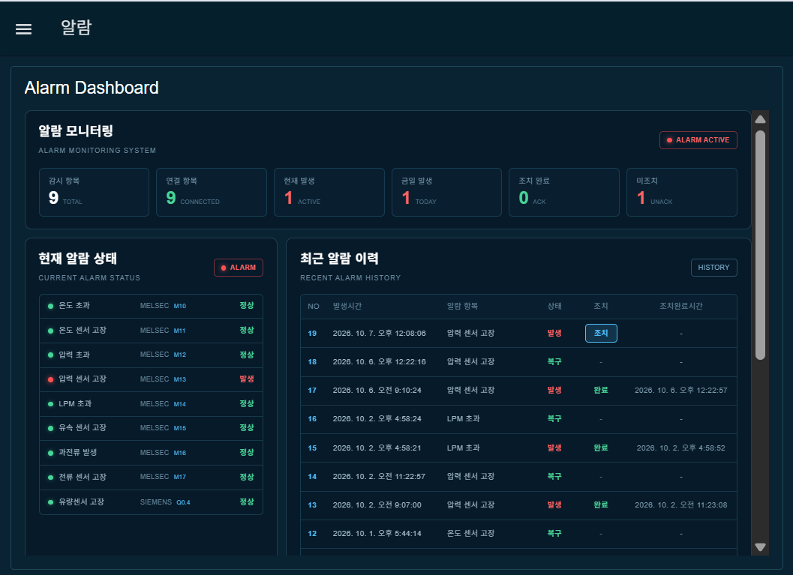
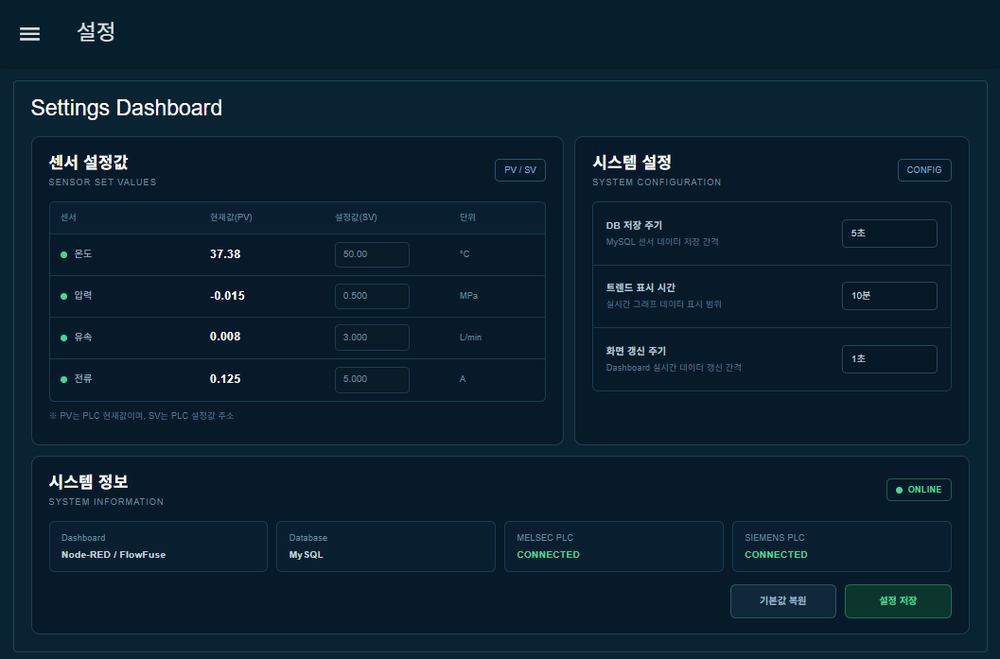
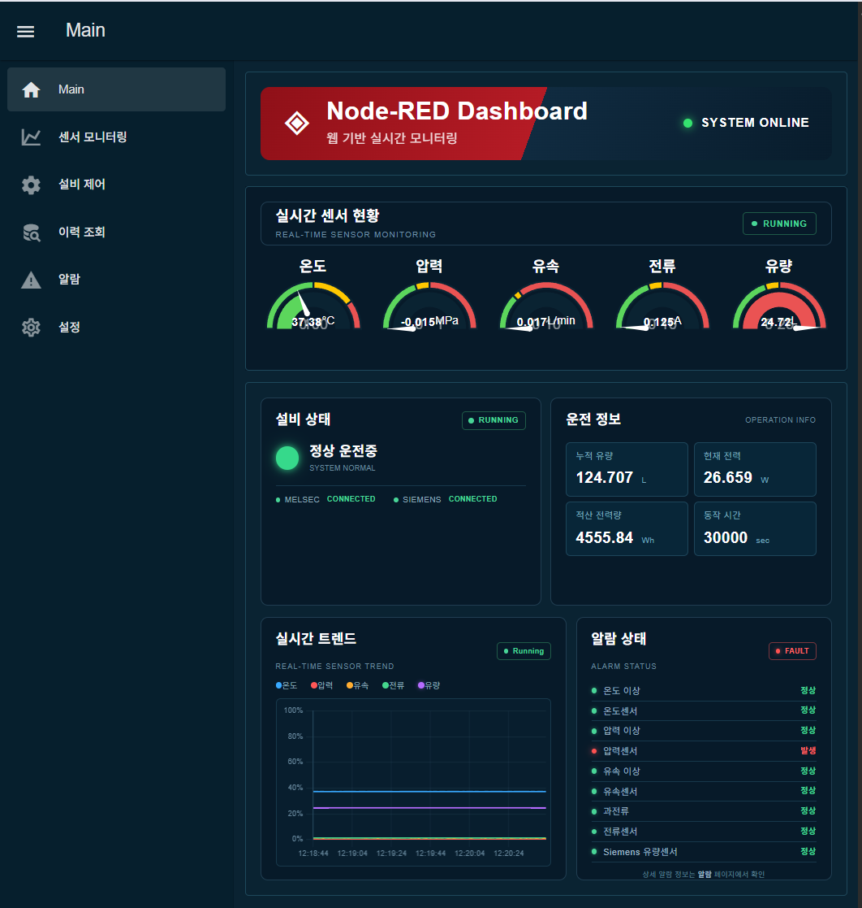
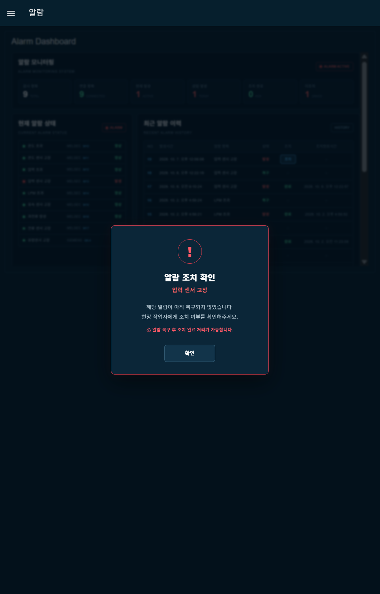
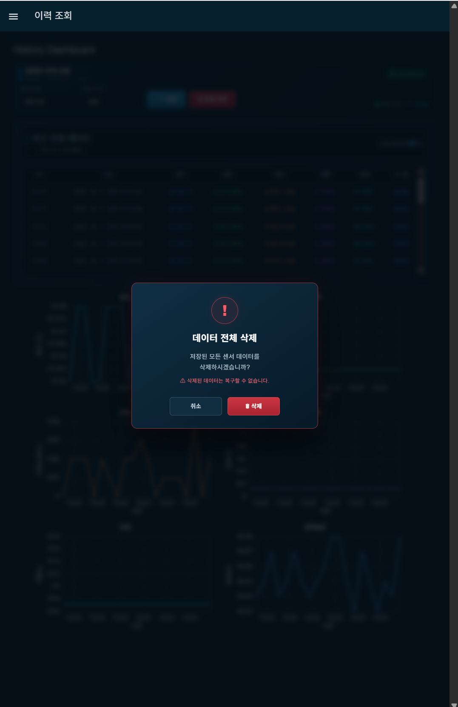
실제 Node-RED 내보내기 JSON을 바탕으로 전체 Flow와 기능별 구현 내용을 정리했습니다. 먼저 전체 구성도를 살펴보고, 아래의 기능별 표와 SQL을 확인할 수 있습니다.
전체 Flow 확대 보기 ↗ · 노드 106개 · 그룹 10개 · 좌표 및 연결 정보 기반
전체 구성도는 JSON의 노드 배치와 연결 관계를 바탕으로 재구성한 그림입니다. 아래의 작은 도식은 주요 처리 단계만 간추린 개념 흐름도이므로 모든 분기와 연결선을 나타내지는 않습니다.
MELSEC 센서값을 Function에서 가공하고, Flow Context의 데이터를 통합해 Dashboard에 전달합니다.
| 구분 | 구현 내용 | 역할 |
|---|---|---|
| PLC READ · 읽기 | MELSEC 센서 읽기 | PLC의 계측 데이터를 Node-RED로 수집 |
| Function · 값 가공 | MelSec 센서 가공 | 수신 데이터를 화면과 저장 처리에 활용할 수 있도록 정리 |
| Flow Context | Flow Context 저장 | 수집값을 공유하여 실시간 UI 데이터에 반영 |
| Dashboard | UI 실시간 데이터 → Dashboard 2.0 | 온도·압력·유속·전류 등 설비 계측 상태 표시 |
PLC WRITE · 쓰기는 PLC 장치로 명령이나 설정값을 전달하는 별도 경로입니다. 위 그림은 센서 데이터 읽기 경로를 요약한 것으로, 쓰기 노드의 실제 주소 및 연결 관계는 전체 Flow 원본을 기준으로 구분해야 합니다.
실제 Node-RED 원본 JSON의 Ind MC Read 7개와 s7 in 1개를 기준으로 정리했습니다. PLC의 원시 데이터를 Function에서 단위 변환·상태 분리하고 Flow Context에 저장해 Dashboard 및 이력 처리에 활용합니다.
| PLC | READ 주소 / 변수 | Function | 가공 및 Flow Context 저장 |
|---|---|---|---|
| MELSEC | DREAL80,4 | MelSec 센서 가공 | D80 온도 / D82 압력(÷100) / D84 유속(÷10) / D86 전류(÷10) |
| MELSEC | D21,7 | MELSEC SV 분리 + 가공 | D21 온도 SV(÷100), D23 압력 SV(÷1000), D25 유속 SV(÷1000), D27 전류 SV(÷1000) |
| MELSEC | D40,16 | 운전정보 분리 + 가공 | D40 밸브 개폐시간(÷10), D48·D49 누적유량(32비트 결합 후 ÷1000), D54 전류 동작시간 |
| MELSEC | DREAL102,3 | 전력/적산 전력량 일괄 가공 | D102 현재 전력(÷10), D106 적산 전력량(÷10) |
| MELSEC | M10,8 | MELSEC 알람 상태 저장 | M10~M17 온도·압력·유속·전류 초과 및 센서 이상 상태 |
| MELSEC | Y10 | Change → 밸브 상태 가공 | 실제 밸브 출력 상태를 valve_state로 저장 |
| MELSEC | M0 | Change → 밸브 상태 저장 | 밸브 명령 상태 M0_state 추적 |
| Siemens | s7 in · 일괄 RD | SIEMENS 일괄 분리 + 가공 | 유량(DB1,REAL12), 펄스(DB1,WORD0), 유량 SV(DB1,WORD4), 원격 AD 및 SV, 밸브 명령·출력, 유량센서 고장 |
데이터 처리 흐름: PLC READ → Function (값 추출·단위 환산·상태 분리) → flow.set() (Flow Context 공유) → UI 실시간 데이터 통합 → Dashboard 2.0 표시. MELSEC 밸브 상태처럼 일부 READ 경로에는 메시지 속성을 변경하는 Change 노드가 포함됩니다.
대표 계산: 누적유량은 D48(하위 워드)과 D49(상위 워드)를 결합한 뒤 1000으로 나누며, Siemens 유량 SV는 DB1,WORD4 값을 100으로 나눠 표시합니다.
주소 표기는 Node-RED 설정 및 Function 코드 기준입니다. PLC에서의 계산 로직과 Node-RED의 표시용 단위 변환을 구분해 기술했습니다.
제공된 Node-RED 원본 JSON의 노드 주소·연결 정보와 S7 Endpoint 변수 매핑을 기준으로 정리했습니다. READ는 PLC 상태 수집, WRITE는 제어 명령 전송이며 서로 다른 경로입니다.
| PLC | 제어 기능 | Function | WRITE 노드 | PLC 주소 |
|---|---|---|---|---|
| MELSEC | 밸브 ON/OFF | 밸브 토글 Function | Ind MC Write | M0 |
| MELSEC | 유량 초기화 | 유량 초기화 펄스 | Ind MC Write | M1 |
| Siemens | 밸브 ON/OFF | Siemens 밸브 토글 Function | s7 out · s_valve_cmd | M1.1 |
| Siemens | 유량 초기화 | Siemens 유량 초기화 Function | s7 out · s_flow_reset | M1.0 |
제어 명령 경로: Dashboard 2.0 UI Template → msg.topic Switch (4개 조건 분기) → 해당 Function → PLC WRITE. 분기 조건은 valve_toggle, flow_reset, siemens_valve_toggle, siemens_flow_reset입니다.
밸브 토글: Flow Context의 기존 명령 상태를 반전해 전송합니다. 유량 초기화: true 전송 후 300ms 뒤 false를 전송합니다.
| 구분 | READ 노드 | PLC 주소 | 후속 처리 |
|---|---|---|---|
| MELSEC 밸브 출력 상태 | Ind MC Read · 밸브 Y10출력 | Y10 | Change (msg.topic = valve_state) → 밸브 상태 가공 → Flow Context |
| MELSEC 밸브 명령 상태 | Ind MC Read · 밸브 RD | M0 | Change (msg.payload = msg.payload.M0) → 밸브 상태 저장 Function 및 Ind MC Write (M0) |
| Siemens 밸브 출력 상태 | s7 in · SIEMENS 일괄 RD | Q0.2 (s_valve_state) | SIEMENS 일괄 분리 + 가공 |
Change 노드 구분: 첫 번째는 MELSEC Y10의 msg.topic을 valve_state로 지정하고, 두 번째는 MELSEC M0 읽기 결과에서 msg.payload.M0를 추출합니다. 특히 M0 READ → Change → WRITE 경로는 별도의 밸브 토글 Function → WRITE 경로와 함께 존재합니다.
Siemens 주소는 S7 Endpoint 변수 매핑 기준이며, MELSEC 밸브의 출력 피드백(Y10)은 명령 비트(M0)와 구분합니다. 실제 설비 동작 및 제어 안정성은 별도 현장 검증 대상입니다.
원본 Node-RED Flow의 저장(INSERT)과 조회(SELECT)는 서로 다른 경로입니다. SQL은 Function 노드가 msg.topic에 생성하고 MySQL 노드가 실행합니다.
| 구분 | 시작 / 입력 | Function | MySQL 이후 |
|---|---|---|---|
| 센서 저장 | 5초 주기 Inject → Flow Context 센서값 6종 | DB INSERT SQL 생성 | MySQL 저장 (sensor_db.node_sensor) |
| 센서 조회 | Dashboard ‘DB 이력 조회’ → history_search | DB 이력 조회 SQL | MySQL 조회 → 최근 조회 데이터 + 이력 트렌드 가공 |
| 이력 삭제 | Dashboard 삭제 확인 → history_delete | 전체 데이터 삭제 SQL | MySQL 실행 |
01. 센서 데이터 저장 · INSERT
온도(temperature), 압력(pressure), 유속(lpm), 순간유량(liter), 전류(ampere), 원격 AD(ad_val)를 Flow Context에서 가져옵니다. 값이 하나라도 undefined이면 INSERT를 중단합니다.
INSERT INTO sensor_db.node_sensor
(temp, pressure, lpm, liter, ampere, ad_val)
VALUES
(${temp}, ${pressure}, ${lpm},
${liter}, ${ampere}, ${ad_val});02. 데이터 이력 조회 · SELECT
조회 기간은 15분·30분·1시간 중 선택하고, 표시 개수는 20·50·100건 또는 전체(최대 1,000건)입니다. 실제 Function에서 기간과 LIMIT를 허용 값으로 제한해 쿼리를 생성합니다.
SELECT
no,
date,
temp,
pressure,
lpm,
ampere,
liter,
ad_val
FROM sensor_db.node_sensor
WHERE date >= NOW() - INTERVAL ${interval}
ORDER BY date DESC
LIMIT ${limit};03. 조회 결과 분기 · 테이블 + 차트 6개
MySQL SELECT 결과는 최근 조회 데이터 UI와 이력 트렌드 가공 Function으로 동시에 전달됩니다. 차트는 조회 결과의 역순 정렬(DESC)을 시간순으로 뒤집어 온도·압력·유속·전류·순간유량·원격 AD로 분리한 뒤, action: "replace" 방식으로 갱신합니다.
04. 전체 데이터 삭제 · DELETE
DELETE FROM sensor_db.node_sensor;
ALTER TABLE sensor_db.node_sensor AUTO_INCREMENT = 1;
SET @COUNT = 0;삭제는 Dashboard의 확인 절차 후 history_delete와 delete_all 조건이 모두 맞을 때만 SQL을 생성합니다. 위 SQL은 제공된 Function 원본 그대로이며, 다중 명령 실행 여부는 MySQL 노드 연결 설정에 따릅니다.
원본 Node-RED JSON을 기준으로 PLC 알람 감지와 Node-RED 이력·알림 처리를 구분했습니다. PLC에서 이상 상태를 비트로 제공하면 Node-RED가 상태 변화를 판별하고, MySQL에 발생·복구 이력을 기록합니다.
| 단계 | 실제 노드 | 역할 |
|---|---|---|
| 1. PLC 상태 수집 | Ind MC Read · MELSEC 알람 일괄 확인 | M10,8 읽기 → M10~M17 이상 상태 8종 수집 |
| 2. 상태 저장 | MELSEC 알람 상태 저장 | Flow Context에 온도·압력·유속·전류의 초과/센서고장 비트 저장 |
| 3. 변화 감지 | 알람 발생 / 복구 변화 감지 | Siemens flow_fault 포함 9개 상태 비교 · OFF→ON 발생 / ON→OFF 복구 |
| 4. 이력 분기 | 최근 알람 이력 저장 / 알람 이력 INSERT 가공 | 최근 20건 Flow Context 유지 · 발생·복구 이벤트를 MySQL에 저장 |
| 5. Windows 알림 | 윈도우 알람 기능 → Windows Alarm Notification | event = 발생인 경우만 브라우저 알림 전달 |
| 6. 작업자 조치 | 알람 ACK 분기 → 알람 ACK SQL 생성 | 복구 기록이 존재하는 미조치 발생 알람만 ACK 및 조치 시각 저장 |
상태 변화 감지: 최초 실행 시 현재 상태만 기억해 불필요한 이력을 생성하지 않습니다. 이후 이전 상태와 현재 상태가 달라진 경우에만 alarm_event를 발행합니다.
01. 알람 발생·복구 이력 INSERT
INSERT INTO sensor_db.alarm_history
(alarm_key, alarm_name, alarm_event,
alarm_state, event_time)
VALUES
('${key}', '${name}', '${event}',
${state}, NOW());02. 작업자 조치 완료 · ACK UPDATE
UPDATE sensor_db.alarm_history
SET
ack_state = 1,
ack_time = NOW()
WHERE no = ${no}
AND alarm_state = 1
AND ack_state = 0
AND EXISTS (
SELECT 1
FROM (
SELECT alarm_key, event_time
FROM sensor_db.alarm_history
WHERE alarm_state = 0
) AS recovery
WHERE recovery.alarm_key =
sensor_db.alarm_history.alarm_key
AND recovery.event_time >
sensor_db.alarm_history.event_time
);03. 알람 이력 및 당일 처리 현황
MySQL의 최근 20건을 no DESC로 조회해 발생·복구·ACK 여부·조치 시각을 Dashboard에 표시합니다. 당일 발생 건수, 조치 완료 건수, 미조치 건수도 별도 SQL로 집계합니다.
설비 알람의 ON/OFF 변화(발생·복구)와 작업자의 ACK(조치 완료 기록)는 구분됩니다. ACK SQL은 동일 알람 키에 대해 해당 발생 시각보다 나중의 복구 기록이 있는지 검사합니다.
PLC에서 읽은 데이터를 Flow Context로 공유하고, Dashboard 2.0에서 실시간 계측값·설비 상태·트렌드·제어 버튼을 통합 표시합니다. 모니터링(READ)과 원격 명령(WRITE)을 분리해 데이터 흐름을 이해할 수 있도록 구성했습니다.
| 구분 | Node-RED 처리 | Dashboard 표시 / 동작 |
|---|---|---|
| 실시간 계측 | PLC READ → Function 단위 변환 → flow.set() → UI 실시간 데이터 | 온도·압력·유속·전류·유량·원격 AD 및 설정값(SV) 표시 |
| 실시간 트렌드 | 실시간 Trend 가공 | 계측값과 설정값 기준선(SV)을 함께 표시 |
| 설비 상태 | 통신 상태 + PLC 알람 비트 종합 | Running / FAULT / COMM ERROR / OFFLINE |
| 원격 제어 | UI 버튼 → topic 분기 → 제어 Function → PLC WRITE | MELSEC·Siemens 밸브 ON/OFF 및 유량 초기화 |
| 제어 피드백 | PLC READ → Change / Function → Flow Context | PLC 실제 출력·상태를 다시 읽어 화면에 반영 |
01. 설비 상태 배지 판정
| 우선순위 | 판정 조건 | 화면 표시 |
|---|---|---|
| 1 | MELSEC와 Siemens 통신 모두 끊김 | OFFLINE |
| 2 | 두 PLC 중 하나라도 통신 끊김 | COMM ERROR |
| 3 | 통신 정상 + 센서 초과·고장·유량센서 고장 중 하나 이상 발생 | FAULT |
| 4 | 통신 정상 + 활성 알람 없음 | Running |
02. Dashboard 원격 명령 topic 및 PLC 쓰기 주소
| UI 명령 topic | 제어 Function | PLC WRITE | 실제 상태 확인 |
|---|---|---|---|
valve_toggle | 밸브 토글 Function | MELSEC M0 | Y10 READ → 밸브 상태 가공 |
flow_reset | 유량 초기화 펄스 | MELSEC M1 | PLC 초기화 동작 및 계측값 재수신 |
siemens_valve_toggle | Siemens 밸브 토글 Function | Siemens M1.1 | Q0.2 READ → Siemens 상태 가공 |
siemens_flow_reset | Siemens 유량 초기화 Function | Siemens M1.0 | PLC 초기화 동작 및 계측값 재수신 |
03. 제어 명령과 상태 피드백의 차이
Dashboard에서 버튼을 눌러 WRITE 명령을 전송한 것만으로 설비 동작을 확정하지 않습니다. MELSEC의 Y10, Siemens의 Q0.2처럼 PLC 출력 상태를 별도로 읽어 화면에 반영합니다. 유량 초기화 명령은 두 PLC 모두 약 300ms 펄스를 전송하도록 Function에서 처리합니다.
Dashboard의 표시값은 PLC 통신으로 수신한 데이터에 기반하며, 실제 밸브 기계 동작 확인과 출력 비트 상태 확인은 구분됩니다.
센서 이력과 알람 이력을 별도 테이블로 관리하며, 알람 조치 완료 기능을 추가하면서 ACK 컬럼을 확장했습니다.
CREATE TABLE sensor_db.node_sensor (
no INT NOT NULL AUTO_INCREMENT PRIMARY KEY,
temp FLOAT(5,2),
pressure FLOAT(3,2),
lpm FLOAT(5,2),
liter FLOAT(5,2),
ampere FLOAT(3,2),
ad_val FLOAT(5,2),
date DATETIME DEFAULT CURRENT_TIMESTAMP
);CREATE TABLE sensor_db.alarm_history (
no INT AUTO_INCREMENT PRIMARY KEY,
alarm_key VARCHAR(50) NOT NULL,
alarm_name VARCHAR(50) NOT NULL,
alarm_event VARCHAR(10) NOT NULL,
alarm_state BOOLEAN NOT NULL,
event_time DATETIME NOT NULL
);
ALTER TABLE sensor_db.alarm_history
ADD COLUMN ack_state TINYINT(1) NOT NULL DEFAULT 0,
ADD COLUMN ack_time DATETIME NULL;조회 기간·표시 개수·센서값·알람 식별자는 Function에서 생성되는 값입니다. 아래 SQL은 가독성을 위해 일부 구문을 축약했으며, 알람 ACK는 후속 복구 이력을 검사한 뒤 갱신합니다.
INSERT INTO sensor_db.node_sensor
(temp,
pressure,
lpm,
liter,
ampere,
ad_val)
VALUES (${temp}, ${pressure}, ${lpm}, ${liter}, ${ampere}, ${ad_val});SELECT no,
date, temp,
pressure,
lpm,
ampere,
liter,
ad_val
FROM sensor_db.node_sensor
WHERE date >= NOW() - INTERVAL ${interval}
ORDER BY date DESC
LIMIT ${limit};INSERT INTO sensor_db.alarm_history
(alarm_key, alarm_name, alarm_event, alarm_state, event_time)
VALUES ('${key}', '${name}', '${event}', ${state}, NOW());UPDATE sensor_db.alarm_history
SET ack_state = 1, ack_time = NOW()
WHERE no = ${no} AND alarm_state = 1 AND ack_state = 0
AND EXISTS (/* 동일 알람의 후속 복구 이력 확인 */);DELETE FROM sensor_db.node_sensor;
ALTER TABLE sensor_db.node_sensor AUTO_INCREMENT = 1;Node-RED Dashboard 2.0과 MySQL을 연동하여 센서 계측 이력과 알람 발생·복구 및 조치 완료 기록을 관리했습니다.
MySQL sensor_db.node_sensor의 센서 계측 데이터를 조회 기간과 표시 개수에 따라 검색합니다. 조회 결과는 데이터 목록과 온도·압력·유속·전류·유량·원격 AD의 6개 트렌드 차트로 확인할 수 있습니다.
MySQL sensor_db.alarm_history에 알람 발생·복구 이벤트와 시각을 기록합니다. 운영자의 조치 완료 시 ack_state와 ack_time을 갱신해 조치 상태와 완료 시간을 함께 관리합니다.
현장 필드 센서의 계측·PLC 제어 데이터를 X-SCADA와 Node-RED 웹 대시보드로 연결하여 현장 및 원격 환경에서 설비 상태를 확인할 수 있는 통합 모니터링 시스템을 구성했습니다.